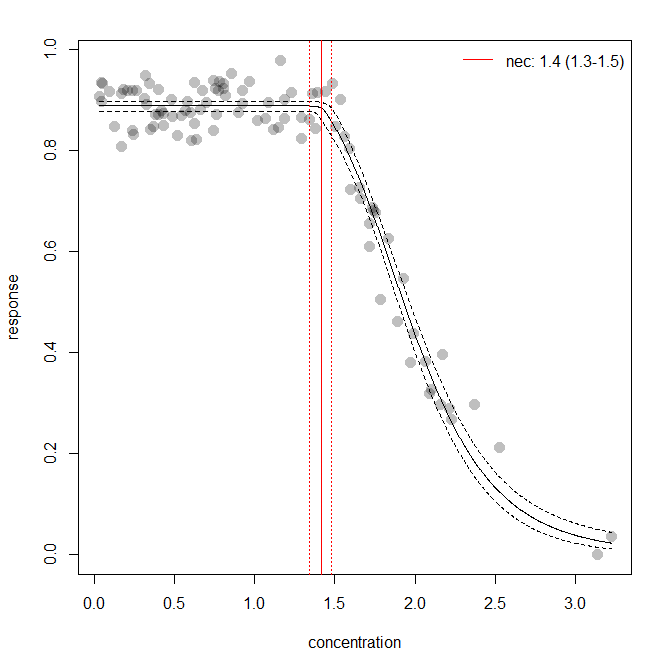
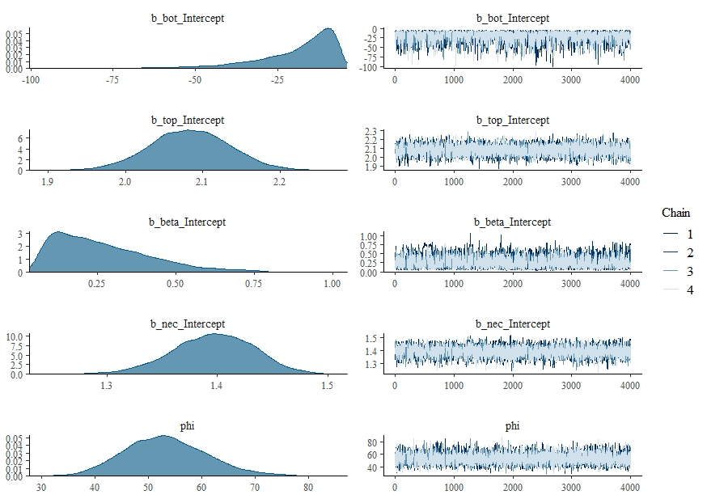

bayesnec
The background of bayesnec is covered in the Single model usage vignette. Here we explain multi model usage using bayesnec. In bayesnec it is possible to fit a a custom model set, specific model set or all of the available models. When multiple models are specified the bnec function returns a model weighted estimate of predicted posterior values, based on the “pseudobma” with Bayesian bootstrap through loo_model_weights (Vehtari et al. 2020; Vehtari, Gelman, and Gabry 2017). These are reasonably analogous to the way model weights are generated using AIC or AICc (Burnham and Anderson 2002).
It is also possible to obtain all individual model fits from the fitted bayesnecfit model object if required using the pull_out function, and also to update an existing model fit with additional models, or to drop models using the function amend.
Multi-model inference can be useful where there are a range of plausible models that could be used (Burnham and Anderson 2002) and has been recently adopted in ecotoxicology for SSD model inference (Thorley and Schwarz 2018). The approach may have considerable value in concentration-response modelling because there is often no a priori knowledge of the functional form that the response relationship should take. In this case model averaging can be a useful way of allowing the data to drive the model selection processing, with weights proportional to how well the individual models fits the data. Well fitting models will have high weights, dominating the model averaged outcome. Conversely, poorly fitting models will have very low model weights and will therefore have little influence on the outcome. Were multiple models fit the data equally well, these can equally influence the outcome, and the resultant posterior predictions reflect that model uncertainty. It is possible to specify the “stacking” method (Yao et al. 2018) for model weights if desired (through the argument wi_method) which aim to minimise prediction error. We do not currently recommend sing stacking weights given the typical sample sizes associated with most concentration-response experiments, and because the main motivation for model averaging within the bayesnec package is to properly capture model uncertainty rather than reduce prediction error.
Installation
To install the latest version from GitHub (https://github.com/open-AIMS/bayesnec) use:
install.packages("remotes")
remotes::install_github("open-AIMS/bayesnec")To run this vignette we will also need some additional packages, which are made available via tidyverse
Examples
Fitting multiple models and model averaging using the bnec function
Fitting a bnec model
So far we have explored how to fit individual models via the function bnec. The bayesnec package also has the capacity to fit a custom selection of models, pre-specified sets of models or even all the available models in the package. Note that as these are Bayesian methods requiring multiple MCMC chains using bnec can be very slow when fitting models = "all". See details under ?bnec for more information on the models, and model sets that can be specified, as well as the Model details vignette which contains considerable information on the available models in bnec and their appropriate usage. In general it is safe to call models = "all", as by default bnec will discard invalid models.
library(bayesnec)
data("nec_data")
set.seed(333)
exp_5 <- bnec(data = nec_data, x_var = "x",
y_var = "y", model = "all")
# save(exp_5, file = "exp_5.RData")Here we run bnec using model = "all" using a simulated data example for a beta response variable and save the output as an .RData file. Saving an .RData file of the all model bnec output can be a useful way of fitting all the models at a convenient time (this can be very slow, so you can run this overnight for example) so you can reload them later to explore, plot, extract values, and amend the model set as required.
Exploring a bayesmanecfit model
We have created some plotting method functions for our bayesnec model types, so we can plot a bayesmanecfit model object simply with plot.
plot(exp_5)
The default plot looks exactly the same out our regular bayesnecfit plot, but the output is based on a weighted average of all the models fits. The NEC estimate on this plot is based on a mix of actual NEC estimates, as well as the NSEC estimates that are used as an approximation to NEC for all the ecx models in the set. Note that we do not currently recommend reporting this values as the NEC (see the Model details vignette for more information). The fitted bayesmanecfit object contains different elements to the bayesnecfit. In particular mod_stats contains the table of model fit statistic for all the fitted models. This includes the model name, the WAIC (as returned from brms), wi (the model weight, currently defaulting to “pseudobma” with Bayesian boostrap from loo), pD, and the over-dispersion estimate (in this case blank because we have fitted a beta family). For this example, the nec4param model has the highest weight, followed by the neclin and the neclinhorme models.
exp_5$mod_stats
# model waic wi dispersion_Estimate dispersion_Q2.5 dispersion_Q97.5
# nec4param nec4param -334.0280 6.370498e-01 NA NA NA
# nechorme4 nechorme4 -303.5511 7.174919e-07 NA NA NA
# neclin neclin -332.7034 1.811404e-01 NA NA NA
# neclinhorme neclinhorme -329.9205 1.817941e-01 NA NA NA
# ecxlin ecxlin -188.2148 6.949153e-09 NA NA NA
# ecx4param ecx4param -302.6093 1.240282e-05 NA NA NA
# ecxwb1 ecxwb1 -294.8037 1.571710e-06 NA NA NA
# ecxwb2 ecxwb2 -294.6499 1.011942e-06 NA NA NAThe bayesmanecfit object also contains all of the original fits, which can be extracted using the pull_out function. For example, we can pull out the highested weighted model, nec4param.

This would extract the nec4param model from the bayesmanecfit and create a new object that contains just this bayesnecfit fit. This would be identical to fitting the nec4param as a single model using bnec. All of the models in the bayesmanecfit can be simultaneously plotted using the argument all_models = TRUE.
plot(exp_5, all_models = TRUE) You can see that some of these model represent very bad fits, and accordingly have extremely low model weights, such as the ecxlin model in this example. There is no harm in leaving in poor models with low weight, precisely because they have such a low model weight and will not influence posterior predictions. However, it is important to assess the adequacy of model fits of all models, because a poor fit may be more to do with a model that has not converged.
You can see that some of these model represent very bad fits, and accordingly have extremely low model weights, such as the ecxlin model in this example. There is no harm in leaving in poor models with low weight, precisely because they have such a low model weight and will not influence posterior predictions. However, it is important to assess the adequacy of model fits of all models, because a poor fit may be more to do with a model that has not converged.
We can assess the chains for the best model to make sure this is good.
plot(exp_5$mod_fits$nec4param$fit) Assessing chains for all the models in a bayesmanecfit doesn’t work as well using the default brms plotting method. Instead use check_chains and make sure to pass a filename argument, which mean plots are automatically saved to pdf with a message.
check_chains(exp_5, filename = "example_5_all_chains")
#Chain plots saved to file example_5_all_chains.pdf, in your working directory.Extracting endpoint values
The models prefixed with ecx are all models that do not have the NEC as a parameter in the model. That is they are smooth curves as a function of concentration and have no breakpoint. The NEC on the plots above for these models are an approximation based on NSEC and should not be used without careful consideration of the validity of this endpoint value (see the Model details vignette for more details. A formal model averaged estimate of NEC should be obtained with model = "nec". We can use the helper functions pull_out and amend to alter the model set as required. pull_out has a model argument and can be used to pull out a single model (as above) or to pull out a specific types of models.
We can use this to obtain first a set of NEC only models from the existing set.
exp_5_nec <- pull_out(exp_5, model = "nec")
# Model(s) nec3param, nechorme, necsigm non-existent in current set of models: nec4param, nechorme4, neclin, neclinhorme, ecxlin, ecx4param, ecxwb1, ecxwb2.
# If needed, add desired model(s) via function amend (see ?amend)
# Pulling out model(s): nec4param, nechorme4, neclin, neclinhormIn this case, because we have already fitted “all” models, we can ignore the message regarding the missing nec models - these are all models that are not appropriate for a Beta family with a logit link function.
We can drop other models from the set if desired, for example let’s drop the neclinhorme model using the amend function.
exp_5_nec <- amend(exp_5_nec, drop = "neclinhorme")
#Fitted models are: nec4param nechorme4 neclinNow we have two model sets, an NEC set and a mixed NEC and ECx set. Of course before we use this model set for any inference, we would need to check the chain mixing and acf plot for each of the input models. For the “all” set, the model with the highest weight is nec4param.
Now we can use the ecx function to get EC10 and ec50 values. We can do this using our all model set, because it is valid to use NEC models for estimating ECx (see more information in the Model details vignette.
ECx10 <- ecx(exp_5, ecx_val = 10)
ECx50 <- ecx(exp_5, ecx_val = 50)
ECx10
# ec_10 ec_10_lw ec_10_up
# 1.564202 1.509949 1.612073
ECx50
# ec_50 ec_50_lw ec_50_up
# 2.004610 1.963123 2.049289The weighted NEC estimates can be extracted directly from the NEC model set object, as they are an explicit parameter in these models.
NECvals <- exp_5_nec$w_nec
NECvals
# Estimate Q2.5 Q97.5
# 1.384765 1.297690 1.459165 Putting it all together
Now we can make a combined plot of our output, showing the model averaged “NEC” model and the “all averaged model”, along with the relevant thresholds.
preds <- exp_5_nec$w_pred_vals$data
par(mfrow=c(1,1))
plot(exp_5, add_nec = FALSE)
abline(v = ECx10, col = "orange", lty = c(1, 3, 3))
abline(v = ECx50, col = "blue", lty = c(1, 3, 3))
abline(v = NECvals, col = "darkgrey", lty = c(3, 1, 3))
lines(preds$x, preds$Estimate, col = "darkgrey")
lines(preds$x, preds$Q2.5, col = "darkgrey", lty = 3)
lines(preds$x, preds$Q97.5, col = "darkgrey", lty = 3)
legend("bottomleft",
legend = c("Complete averaged model", "ec10", "ec50", "NEC"),
col = c("black", "orange", "blue", "darkgrey"), lty = 1, bty = "n"
)
References
Burnham, K P, and D R Anderson. 2002. Model Selection and Multimodel Inference; A Practical Information-Theoretic Approach. 2nd ed. New York: Springer.
Thorley, Joe, and Carl Schwarz. 2018. “ssdtools: Species Sensitivity Distributions. R package version 0.0.3. https://CRAN.R-project.org/package=ssdtools.”
Vehtari, Aki, Jonah Gabry, Mans Magnusson, Yuling Yao, Paul-Christian Bürkner, Topi Paananen, and Andrew Gelman. 2020. “Loo: Efficient Leave-One-Out Cross-Validation and Waic for Bayesian Models.” https://mc-stan.org/loo.
Vehtari, Aki, Andrew Gelman, and Jonah Gabry. 2017. “Practical Bayesian Model Evaluation Using Leave-One-Out Cross-Validation and Waic.” Statistics and Computing 27 (5): 1413–32. https://doi.org/10.1007/s11222-016-9696-4.
Yao, Yuling, Aki Vehtari, Daniel Simpson, and Andrew Gelman. 2018. “Using Stacking to Average Bayesian Predictive Distributions (with Discussion).” Bayesian Analysis. https://doi.org/10.1214/17-ba1091.